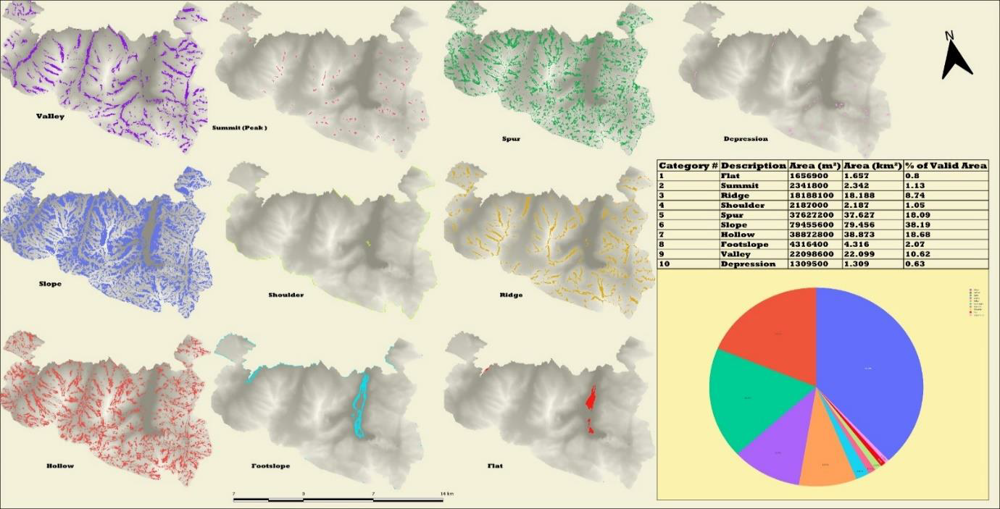
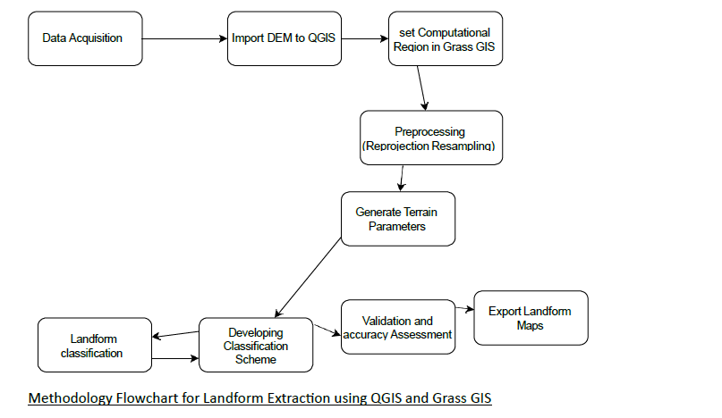
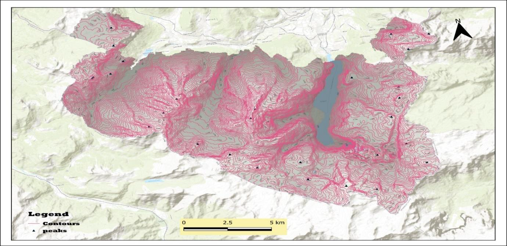
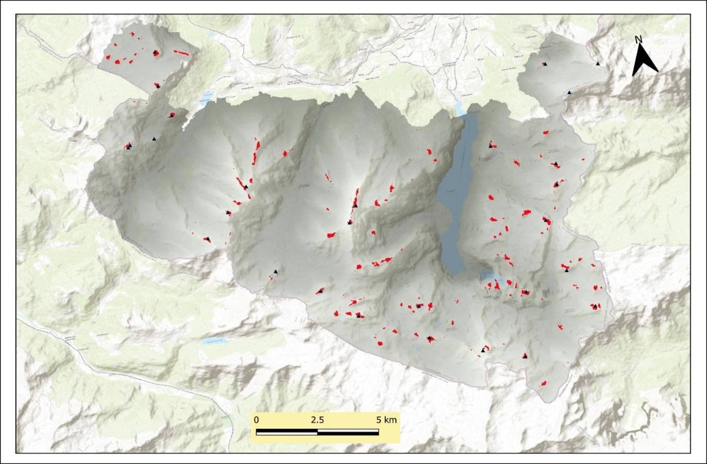

Extract Landforms
Use the DEM to identify and classify terrain forms using raster-based pattern recognition.
An automated terrain-analysis project using a Digital Elevation Model and the Geomorphon algorithm to classify, extract and map major landform types in Berchtesgaden National Park.
Landform classification is an important component of geomorphological analysis because terrain shape influences hydrological processes, erosion, sediment transport, ecological patterns and landscape structure.
This project applied a raster-based pattern-recognition approach using the Geomorphon algorithm to automatically classify landforms from a Digital Elevation Model.
The analysis focused on Berchtesgaden National Park and produced a terrain classification containing ten distinct landform categories.
The Geomorphon algorithm examines the relative elevation pattern around each raster cell and assigns the cell to a terrain class based on the shape of the local relief.

The goal of the project was to classify, extract and map different landform types within Berchtesgaden National Park using an automated Geomorphon-based workflow.
Use the DEM to identify and classify terrain forms using raster-based pattern recognition.
Calculate the area and percentage covered by each classified landform category.
Compare selected reference terrain points with the automated landform classification.
The analysis combined DEM preprocessing, GRASS GIS terrain functions, automated classification and visual validation.

A high-resolution Digital Elevation Model provided the terrain surface used in the analysis.
The DEM was projected to UTM Zone 32N to support reliable distance and terrain calculations.
Terrain preprocessing included sink removal and preparation of the computational region.
The Geomorphon algorithm was applied through the GRASS GIS/QGIS environment.
Landform classes were quantified and then compared with selected reference terrain points.
Geomorphon classification uses local terrain geometry rather than only slope or elevation values. Each raster cell is evaluated relative to neighbouring terrain directions and assigned to a characteristic geomorphic form.
Slope was the dominant landform class, indicating that much of the landscape consists of transitional sloping terrain.
Hollows formed the second-largest class and represent concave terrain associated with drainage and erosional processes.
Spurs occupied a substantial proportion of the study area, reflecting the rugged and uneven terrain structure.
Valley landforms showed the importance of drainage networks and hydrological processes within the landscape.
Reference terrain features were manually identified and compared with the automated classification.
Contours and selected peak locations provided an additional visual basis for checking whether the classified terrain forms corresponded to recognizable geomorphological features.


Visual assessment was used as the primary validation approach. Selected peak locations were overlaid on the classified terrain surface to evaluate spatial agreement between reference features and the automated output.
The comparison showed a high level of spatial correspondence, with nearly 97% of the validation points aligning with the expected summit areas.
The dominance of slopes, hollows, spurs and valleys reflects the rugged character of the study area and indicates strong relationships between terrain structure, erosion and hydrological processes.
Less frequent classes such as flat areas, depressions and summits represent localized terrain conditions, while transition landforms such as shoulders and footslopes help describe how the relief changes across the landscape.
This project strengthened my understanding of how raster-based terrain analysis can be used to automate geomorphological interpretation from elevation data.
I gained practical experience in preparing DEM data, using GRASS GIS tools within QGIS, applying the Geomorphon algorithm, calculating landform statistics and evaluating classification results against manually selected reference features.
The project also showed me the importance of validation when using automated terrain-classification methods, particularly in complex mountainous landscapes.
← Back to Projects